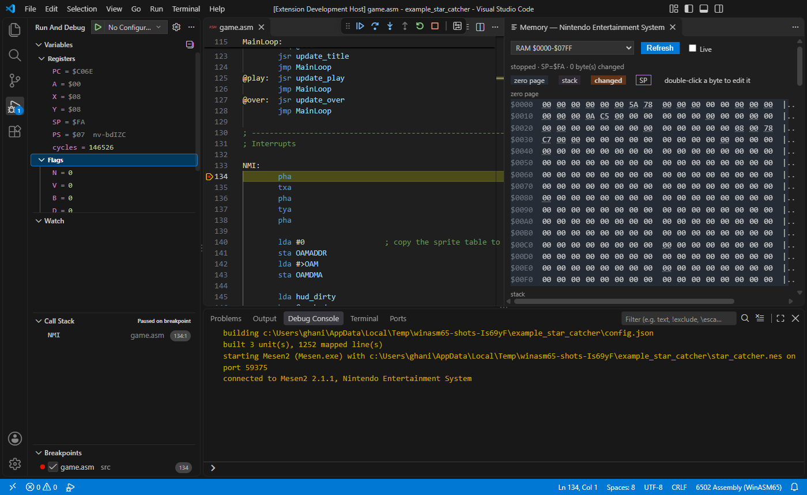
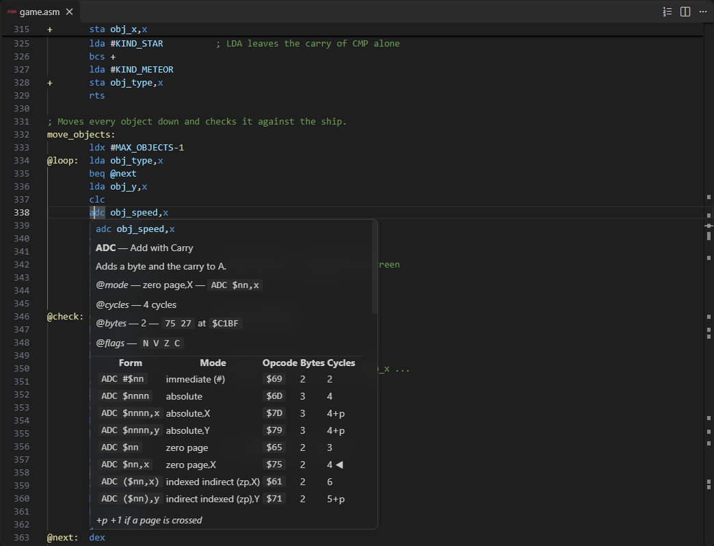
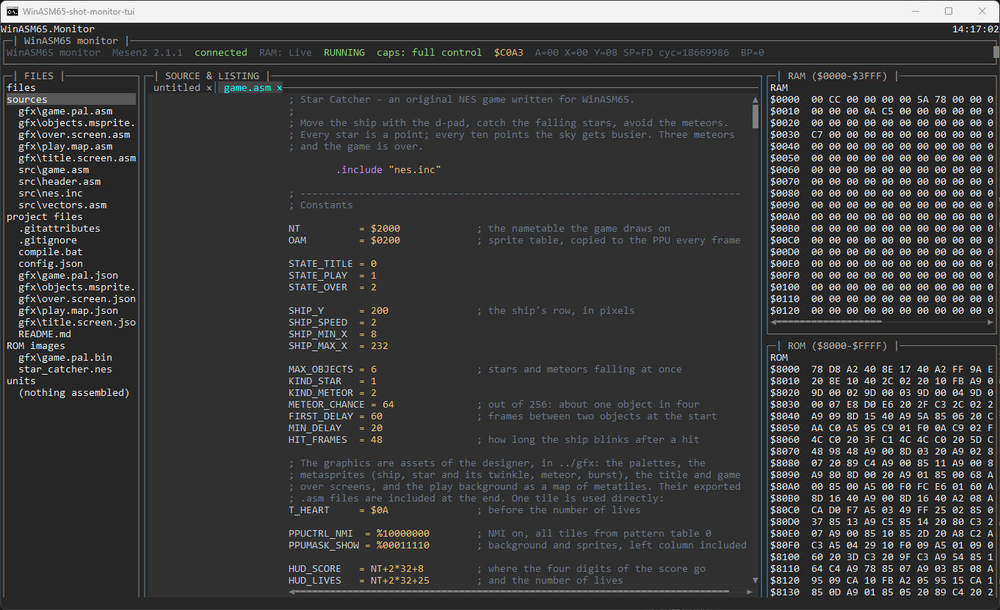
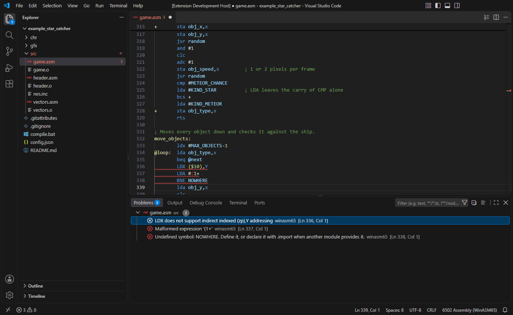
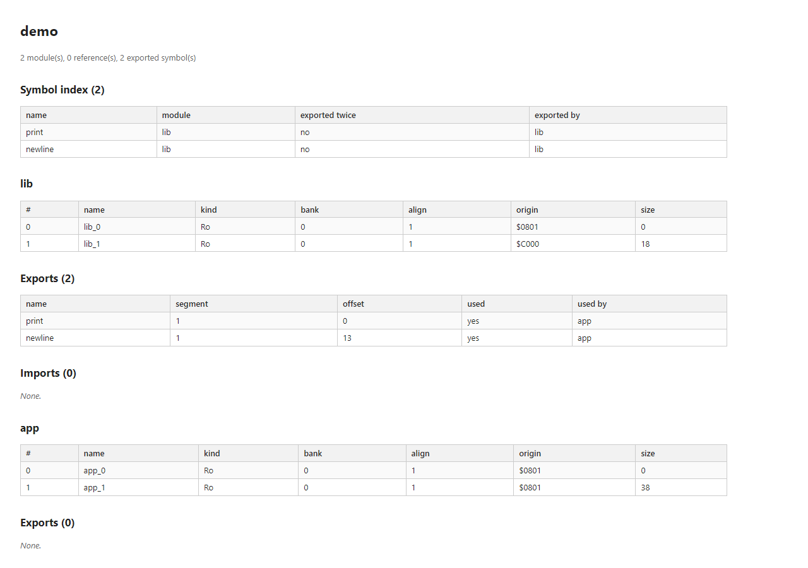
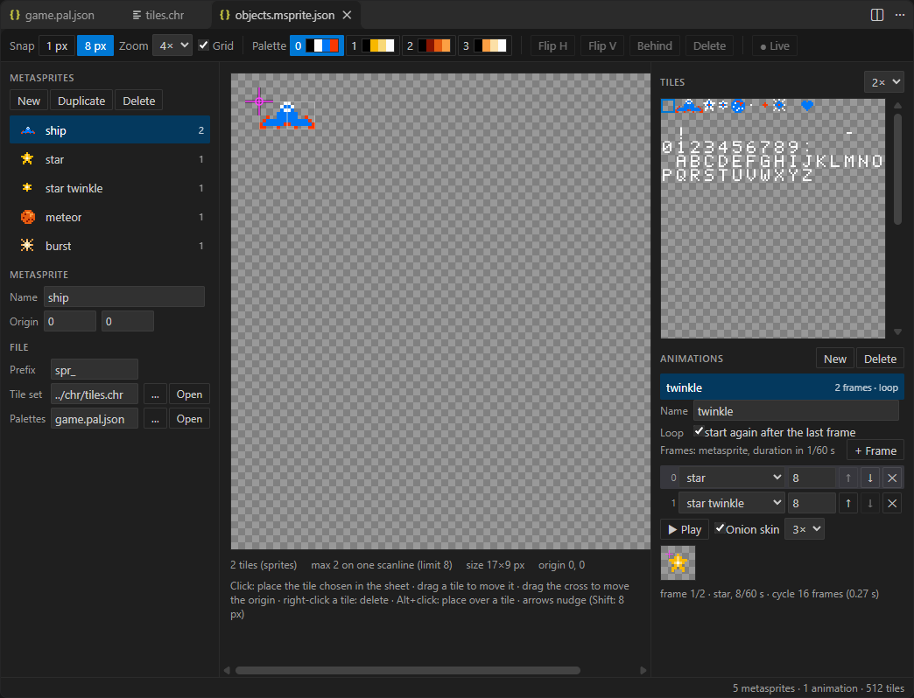
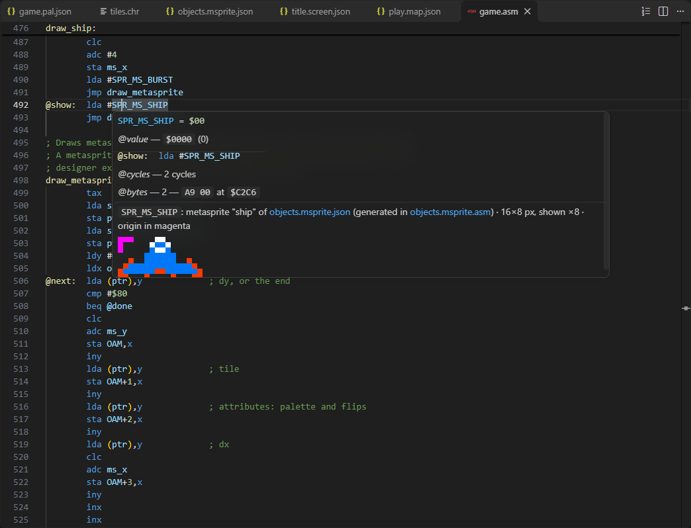

WinASM65
A 6502 assembler, linker and debugger for Windows. It assembles for the NES, the Commodore 64, the Apple II, the Atari 8-bit, the BBC Micro and a dozen other systems, and it debugs the result live in an emulator (Mesen2 for the NES, or any emulator with a WinASM65 bridge), from a terminal monitor or from VS Code. A second VS Code extension draws a game's graphics, and every tool is also offered to AI assistants through an MCP server.


What it does
WinASM65 started as a single assembler executable and grew into a small tool chain. Each part is a separate project in WinASM65.sln, and each is usable on its own:
Assembler
Two-pass 6502 assembler: MOS syntax plus the common ca65, asm6 and NESASM forms, macros, local and anonymous labels, five CPUs.
Projects
A config.json assembles several units, links them through their symbol files, and combines them into one image, such as an iNES ROM.
Modules and linker
Relocatable .w65 modules, .w65a archives, a linker and an offline HTML viewer.
Targets
Executable formats and disk images for 15+ systems, from .nes and .prg to GEOS on D64 and tokenized BASIC.
Monitor
A terminal monitor that talks to an emulator through a bridge (Mesen2's Lua bridge for the NES): live RAM, breakpoints, stepping, patching.
VS Code
An extension: syntax colouring, diagnostics, hover cards, listing column, build task, a full debugger and a Memory panel.
Emulator bridges
The line protocol a bridge answers, and how a project names its emulator: Mesen2, MesenCE or your own.
Graphics Designer
Tiles, palettes, screens, maps, metasprites and animations, edited in VS Code and exported to assembly.
AI assistants
An MCP server: build, debug and draw from Claude, Copilot or any other assistant.
The solution
Thirteen .NET projects in WinASM65.sln (eight libraries or programs and five test projects) and two VS Code extensions. The arrows are project references: everything on the debugging side depends on the assembler, and nothing in the assembler depends on the debugging or graphics side. The graphics projects do not reference the assembler at all.
| Project | Kind | Role | Page |
|---|---|---|---|
WinASM65 | exe, .NET 8 | The assembler, the multi-segment project builder, the module format and linker, the target formats, the 6502 execution core. The other projects use it as a library. | Assembler |
WinASM65.Monitor.Abstractions | library | Interfaces the monitor is written against: CPU state, memory regions and spaces, system profiles, execution capabilities. | Monitor |
WinASM65.Systems | library | The definitions of the machines: memory spaces besides the CPU's, the views a memory panel shows, how a program starts, how an image maps to ROM, the colours. The NES has its own; any other system is a plain 6502. | Emulator bridges |
WinASM65.Monitor.Core | library | Everything of the monitor that has no UI: the session, the emulator configuration and adapters, the bridge client, the protocol, listings and the source map. | Monitor |
WinASM65.Monitor | exe | The terminal monitor: file tree, source and listing editor, RAM and ROM panes. | Monitor |
WinASM65.Tooling | exe | One program, four modes: a Debug Adapter (--dap), a Language Server (--lsp), an MCP server for AI assistants (--mcp) and a build front end (--build). | Tooling, AI assistants |
WinASM65.Graphics | library | Graphics assets (tiles, palettes, screens, maps, metasprites), the NES graphics, the exporter to assembly, a PNG renderer and importer. | Graphics Designer |
WinASM65.Designer | exe | Its command line (export, render, import, systems) and the server the designer extension talks to (--server). | Graphics Designer |
vscode-extension | TypeScript | The WinASM65 extension. It starts WinASM65.Tooling, adds the listing column and the Memory panel, and offers the MCP server to VS Code's agents. | VS Code |
graphics-extension | TypeScript | The WinASM65 Graphics Designer extension: an editor per asset, export on save, pictures in hovers, live preview through the debugger. It starts WinASM65.Designer --server. | Graphics Designer |
*.Tests | MSTest | About 1,200 tests in five projects (WinASM65.Graphics.Tests among them), including golden hashes of whole ROMs. | Tests |
From source to a paused emulator
The path a source takes when you press F5 in VS Code, and where each step is documented:
- Assemble. Each unit of the project is assembled, then resolved against the symbol files of the units it depends on; each produces an object file, a symbol file and an in-memory listing. Assembly pipeline, Projects and segments.
- Combine. The object files and binary files (header, CHR data) are concatenated into the ROM, each padded to its declared size. Combining.
- Launch. The emulator the project configures starts with the ROM and its bridge script (Mesen2 and
bridge_mesen2.luafor the NES); the bridge opens a TCP port. Emulator bridges. - Map. The listings become a source map: every emitted byte knows its file and line. Breakpoints set on source lines become addresses. Debug adapter.
- Debug. The bridge reports when execution stops; the adapter turns that into a stack frame, registers and memory. VS Code extension, Monitor.
A short tour












Where to start reading
- To use WinASM65: Getting started, the example game, then the syntax reference.
- To change the assembler: Assembly pipeline and CPUs.
- To change the debugger: Monitor, then Tooling and VS Code. To debug on another emulator: Emulator bridges.
- To draw a game's graphics: Graphics Designer. To let an assistant work on a project: Tools for AI assistants.
- To add a target system: Targets and formats.